VSCode Lab Part 3 - Cross-Chaincode Calls and Debugging a Smart Contract¶
You can use a chaincode to invoke other chaincodes. This allows a chaincode to query and write to data outside of its namespace. A chaincode can both read and update data outside of its namespace when calling chaincode that is instantiated on the same channel. However, a chaincode can only query data when calling chaincode on different channels.
Chaincode to chaincode interactions can be very useful if you are looking to integrate business logic at the chaincode level or for migration purposes. The goal of this lab is to show you how to code cross-chaincode calls in a smart contract. The API that is used for doing this is the invokeChaincode() API from the fabric-shim library’s ChaincodeStub class. The invokeChaincode() API is a lower-level Fabric API that can be invoked through the higher-level Fabric API that you have been using in the previous labs.
Part of the cross-chaincode process is to understand how and where you want to code the chaincode to chaincode interaction. In this lab, we add a new smart contract called commercial-bond that we want commercial-paper to query. We want to simulate the situation that when a commercial-paper is issued, the commercial-paper smart contract queries the commercial-bond contract for current returns on bonds with a similar maturity date, and sets the paper price accordingly. For more details on this particular use case, see the scenario described here: Cross Chaincode Calls.
For this lab commercial-bond is already written and packaged up for you. You will clone and add the package to your VSCode IBM Blockchain Platform Extension. Then you will package, install and instantiate the contract to your locally-running fabric environment. The instantiate process will also add a few sample bonds to the ledger and to commercial-bond's world state. This way your commercial-paper will have existing bonds to query and extract rates from. You can also experiment with commercial-bond's functions by issuing your own bonds.
The bulk of the lab will be done against the existing commercial-paper. This is where you will add additional functions that interact with the commercial-bond contract. We will also use the VSCode IBM Blockchain Platform Debug Smart Contract function so you get an understanding of how to quickly iterate through changes to a smart contract in development mode and debug a smart contract.
Finally we will deploy the bond-query-enabled commercial-paper to your local fabric, generate some functional tests, and run through them to make sure that the smart contract is functional.
These are the general steps you will take:
- Clone the commercial-bond smart contract package and add package to VSCode workspace
- Package commercial-bond, install and instantiate
- Run a few tests to get familiar with commercial-bond
- Clone fresh commercial-paper
- Setup Debug Smart Contract in Development Mode
- Go through existing papercontract function in debugger
- Make smart contract update to include cross-chaincode call, test in debug session
- Add getPaperRate transaction to smart contract, test in debug session
- Add getAllPapersFromIssuer transaction to smart contract, test in debug session
- Package commercial-paper, install and instantiate
- The end!
Section 1: Clone the commercial-bond smart contract package¶
1. Open up your terminal and run the following command from your home directory:
$ git clone https://github.com/jinvanstee/commercial-bond.git
Sample output:
Cloning into 'commercial-bond'...
remote: Enumerating objects: 32, done.
remote: Counting objects: 100% (32/32), done.
remote: Compressing objects: 100% (28/28), done.
remote: Total 32 (delta 3), reused 31 (delta 2), pack-reused 0
Unpacking objects: 100% (32/32), done.
2. Return to your VSCode Explorer and add the commercial-bond smart contract folder to your workspace.
Right click in a blank area in your workspace to get the drop down and select Add Folder to Workspace. Then browse to <path to commercial-bond>/organization/magnetocorp/ and select commercial-bond and click Add.

You should see the contents of the folder in your workspace, like the following picture: (Please note that your other folders may look different than the screenshot below, but the contents within the commercial-bond folder should be the same)

Section 2: Package commercial-bond, install and instantiate¶
1. In VSCode, open up the Command Palette (either by clicking on the gear icon to the lower left and selecting Command Palette or pressing Command + Shift + P if you are on a Mac and Ctl + Shift + P if you are on Linux).
Select IBM Blockchain Platform: Package a Smart Contract Project:

2. Then select commercial-bond.

Upon success, you will see in the lower right corner a message like this:

3. Now you will install this chaincode to your local-fabric. Navigate to the IBM Blockchain Platform view in VSCode (the 6th button down from the left menu):
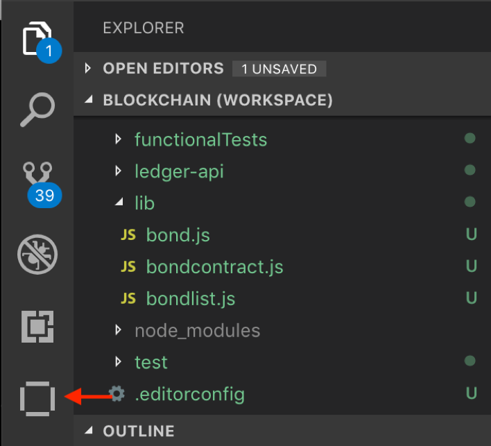
4. Under the Local Fabric Ops panel, click on + Install, then select commercial-bond@0.0.1 from the list:

Upon success, you will see a message similar to the following in the lower right corner of VSCode:
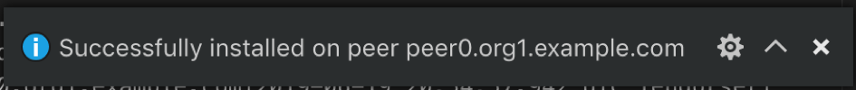
You will also see the package listed under Installed in the Local Fabric Ops panel:

5. Now you will instantiate the installed contract. In the Local Fabric Ops panel, select + Instantiate. In the pop-up, similar to when you installed the smart contract, select commercial-bond@0.0.1.
Next, type instantiate when it asks you What function do you want to call. Press Enter to continue:

Then you will see another pop-up asking what arguments to pass to the function. You will just hit Enter here:
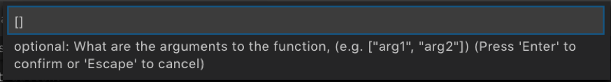
Lastly, you will be asked if you want to provide a private data collection configuration file. Again, just hit Enter here because private data collection doesn't apply in this case.:

First time initialization of Node.js chaincode can take a while because it will need to pull down all the Node dependencies from the npm registry. After a few minutes, upon success, you will see a success message in the lower right corner of VSCode:

6. For reference for later, these are the bonds that were added to the ledger in the initialization phase:
const bonds = [
{
issuer: 'MagnetoCorp',
bondNumber: '00001',
issueDateTime: '2019-04-17',
maturityDateTime: '2020-04-17',
faceValue: '10000',
interestRate: '0.05',
},
{
issuer: 'Digibank',
bondNumber: '00001',
issueDateTime: '2019-05-17',
maturityDateTime: '2020-05-17',
faceValue: '50000',
interestRate: '0.04',
},
{
issuer: 'MagnetoCorp',
bondNumber: '00002',
issueDateTime: '2019-06-17',
maturityDateTime: '2020-06-17',
faceValue: '10000',
interestRate: '0.05',
},
{
issuer: 'Digibank',
bondNumber: '00002',
issueDateTime: '2019-07-17',
maturityDateTime: '2020-07-17',
faceValue: '50000',
interestRate: '0.04',
},
];
Now that you have instantiated commercial-bond on your locally-running fabric, you can...
Section 3: Run a few tests to get familiar with commercial-bond¶
1. VSCode IBM Blockchain Platform Extension makes it easy for you to test out functions of your smart contract directly inside VSCode. Let's run a few tests directly through the functions made visible in the Fabric Gateways panel of the IBM Blockchain Platform view. Refresh the Fabric Gateways panel, and click on all the twisties to reveal the functions of commercial-bond:

Scroll down to see all the functions of this smart contract:

All of these functions represent transactions in this smart contract. Now, let's evaluate a few transactions.
2. Let's start with getAllBondsFromIssuer which will return all the bonds from a specified issuer.
Select the function getAllBondsFromIssuer, and either right-click or Ctl+click and select Evaluate Transaction:

3. Next, you will see a familiar pop-up at the top of VSCode that asks you what are the arguments to the transaction. This transaction only takes one argument, and that is the name of the issuer. Let's type in "MagnetoCorp" as follows (important to include the double quotes):

4. Next, it will ask you what transient data to pass for the transaction. In this case we have none, so just press Enter to move forward.

Now, in the OUTPUT view, you will see the results of evaluating this transaction. And you will see that there are two bonds issued by MagnetoCorp:

Study the output and you will see other key/value pairs for each bond such as maturityDateTime, issuer, and interestRate.
5. A quick exercise- what is the interestRate for bondNumber 00002?
6. Now, let's issue a bond. This time we will submit the transaction so it gets committed to the ledger.
In the Fabric Gateways panel, select the issue transaction. Either right-click or Ctl+click and select Submit Transaction.
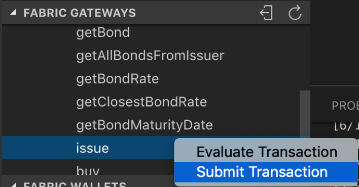
7. Next, copy and paste the following inside the brackets when the pop-up asks you what are the arguments to the transaction:
"MagnetoCorp", "00003", "2019-02-28", "2020-02-28", "50000","0.01"

Hit Enter and next you will see the screen that asks you for transient data. Hit Enter here because we don't have any transient data in this case.
Then the transaction will get submitted. Upon success, you will see the following OUTPUT panel. Notice the [SUCCESS] message which means the transaction was successfully submitted.

8. The output to the issue command represents the bond, but it isn’t very helpful as it is printed as the ASCII value of each character in decimal notation. Let's re-evaluate the getAllBondsFromIssuer transaction and see if this bond shows up. Use steps 2-4 above to re-run this transaction. Upon success, you will see the following output, and notice that the bond we just added shows up now:

9. Now, the last transaction for you to test is the getClosestBondRate transaction. This is the transaction that we will update commercial-paper to call. This transaction takes two arguments: 1) bondIssuer and 2) compareMaturityDate. This transaction will iterate through all the bonds issued by the specified bondIssuer until it finds a bond that has a similar maturity date as the one passed through compareMaturityDate, and it will return that bond's interest rate. If it cannot find a bond with a similar maturity date it will return an empty string.
Select getClosestBondRate from the Fabric Gateways panel, and either right-click or Ctl+click and select Evaluate Transaction.
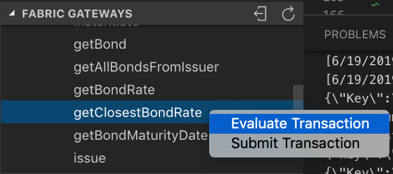
10. Next you will be asked what arguments to pass. Copy and paste the following inside the brackets:
"MagnetoCorp","2020-02-15"

Hit Enter. Again, you will be asked for transient data and again you will just hit Enter to progress forward to evaluating the transaction.
Upon success, you will see the following output in the OUTPUT panel:
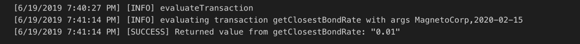
11. Notice that the interest rate returned is 0.01, which if you recall is the interest rate associated with MagnetoCorp's bondNumber 00003, which has a maturity date of 2020-02-28 which is the same month as the second argument you passed for getClosestBondRate.
12. Now re-evaluate the transaction getClosestBondRate (steps 9 - 11) with the following arguments:
"MagnetoCorp","2020-04-30"
What do you get returned? Is it expected? Which bond does the rate belong to?
13. Lastly, run the same evaluation but with the following arguments:
"MagnetoCorp","2020-05-31"
Now what do you get returned? Is it expected?
Section 4: Clone commercial-paper¶
For this lab, we will start with a fresh commercial paper smart contract. Let's use the IBM Blockchain Platform Extension sample home page to get the commercial-paper package. Click on the IBM Blockchain Platform Extension icon in the upper right corner of VSCode:

This will bring up the following page in VSCode:

Click on Commercial Paper in the Explore sample code section:

On the Commercial Paper Sample page, click on Clone (the picture below shows Clone again but if you are doing this the first time it should just say Clone):

Now it will ask you where you want to clone the repository. Pick a location on your workstation, and click Clone Repository.
When it is done cloning, you will see the location that you cloned to here:
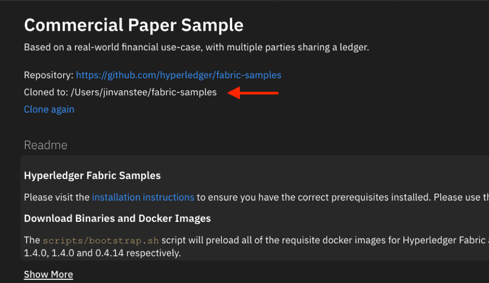
Now, from the same Commercial Paper Sample page, go to the Smart Contracts section and select Open Locally for MagnetoCorp Contract:

In the pop-up window, select Add to workspace:

In your VSCode Explorer workspace panel, you will see the following folder with its contents added:

Now you are ready to make changes and test them quickly by working in Hyperledger Fabric development mode in conjunction with the VSCode Debugger.
Section 5: Setup Debug Smart Contract in Development Mode¶
The VSCode IBM Blockchain Platform Extension provides an integrated Debug Smart Contract experience with VSCode's built-in debugger. It is a powerful tool for digging deeper into your smart contract code stack, and can be extremely useful in your smart contract development workflow. Using the debug feature will allow you to efficiently test out updates to your smart contract against a local Hyperledger Fabric running in development mode, without having to re-package, re-install and upgrade your smart contract manually with every change. Now, let's get into setting up the debug environment.
1. The first thing you will do is to Toggle Development Mode on your peer. Navigate to the IBM Blockchain Platform view in your VSCode:
In the Local Fabric Ops panel, scroll down to find Nodes and expand that section. Ctl + select peer0.org1.example.com and select "Toggle Development Mode":

This will take a minute. Upon success you will see the following message in the lower right corner:

You will also see in the Local Fabric Ops panel, under Nodes, a little infinity symbol next to the peer:

2. Let's return to the VSCode Explorer perspective, and click on papercontract.js to open it.

If you are unfamiliar with commercial-paper, please review what papercontract.js does in VSCode Lab Part 2 Section 1 and Section 3.
3. Next, navigate to the Debug view in VSCode:
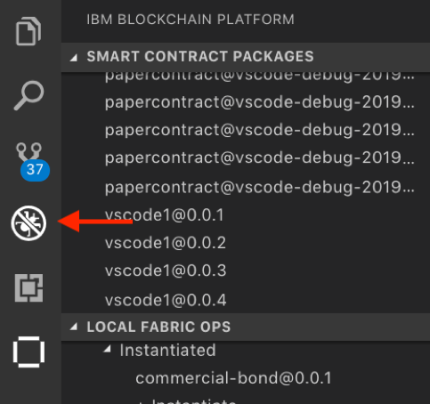
In this view you will see the following panels:

An explanation of each of the panels:
- Variables - this panel will display all the variables in the current function
- Watch - you can pick specific variables to watch here, and track them as you step through your code
- Call Stack - this panel will display the call stack of the current function you are stepping through
- Breakpoints - this panel will display all the breakpoints in the current program
4. Let's configure a launch.json file for papercontract.js. According to VSCode's debugging documentation: For most debugging scenarios, creating a launch configuration file is beneficial because it allows you to configure and save debugging setup details. VSCode keeps debugging configuration information in a launch.json file located in a .vscode folder in your workspace (project root folder) or in your user settings or workspace settings.
To get started, click on the little arrows next to the DEBUG toolbar at the top of the Debug view.
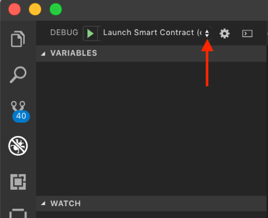
Now select the name of your paper-contract project folder from the drop down. In the sample picture below the name of the project folder is cp-magnetocorp-contract-javascript:

Next a pop-up window will ask you to select an environment. Because we are dealing with Node.js chaincode, select the option Fabric Smart Contract (Node.js):

This will open a launch.json. It should look like the following:
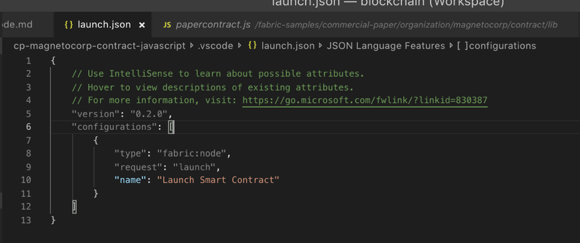
Make sure your launch.json file looks like the above (if there are extra entries delete them). Save the file with Ctl+S and close it.
5. We are ready to launch a debug session for papercontract.js.
Click on the little arrows again next to the DEBUG toolbar at the top of the Debug view:
This time select Launch Smart Contract (cp-magnetocorp-contract-javascript). Please note your project folder name may be slightly different. You will see your project folder name appear in parenthesis.
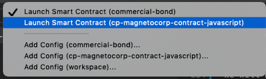
Now, click on the green arrow in the DEBUG toolbar to launch a debug session against the smart contract:

You should now see a little debugging toolbar appear at the top of VSCode, like the following picture. You can see the blue IBM Blockchain Platform logo at the right of this toolbar. Click on that button:

6. Clicking on the IBM Blockchain Platform button will bring up another pop-up menu, select Instantiate Smart Contract from this menu as follows:

7. Now the IBM Blockchain Platform Extension will package your smart contract and install it to your local peer running in development mode. Next you will be presented with a familiar pop-up asking what function you'd like to call. Type in instantiate as follows:

Then you will see another pop-up asking what arguments to pass to the function. You will just hit Enter here:
Lastly, you will be asked if you want to provide a private data collection configuration file. Again, just hit Enter here:
Finally, upon successful instantiation, you will see the following message in the lower right corner:
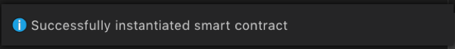
8. To double check that the debug package was instantiated onto the local Hyperledger Fabric peer, navigate to the IBM Blockchain Platform view in VSCode, and look for the debug smart contract package in the Local Fabric Ops panel (Note: you may have to refresh that panel to see the new package):

9. Return to the VSCode Debug view. Now you are setup for developing and debugging the commercial-paper smart contract!
Section 6: Go through existing papercontract function in debugger¶
It may seem like a lot of steps to setup the smart contract debugging environment in VSCode, but it is worth spending time up front to configure a debugging session. You will be a more effective smart contract developer with this tool in your toolkit.
1. In the VSCode Debug view, if you look at the DEBUG CONSOLE output, you will see all the console.log messages for the functions that have been executed so far. So far we've only instantiated the smart contract, so you will only see the following message in the DEBUG CONSOLE:

And if you look at the papercontract.js code at line 52 you will see the console.log instruction (note that where this code is located in your papercontract.js may be slightly different. If you see the DEBUG CONSOLE output it tells you which line this is from):

2. Let's put in a breakpoint and walk through one of the functions. Let's place a breakpoint on the first instruction in the issue function. Your screen should look like the following (you can either click on the space to the left of the line number, or put your cursor on that line and hit the F9 key):

3. Now let's execute the issue transaction and walk through the debugging process on the current papercontract.js. To submit or evaluate a transaction in the debugging environment we will leverage the integrated IBM Blockchain Platform Extension debug functionality. In the debug toolbar, click on the IBM Blockchain Platform button:
A familiar pop-up window will appear at the top, select Submit Transaction:

Then another pop-up window will appear listing all the functions/transactions that are available in papercontract.js for you to test. Let's select issue:

Then, in the pop-up that asks what arguments to pass to the transaction, enter the following inside the brackets:
"MagnetoCorp", "00005", "2020-05-31", "2020-11-30", "500000"

For the next pop-up you will be asked for transient data for this transaction. Just hit Enter here:
4. Now the debugger will automatically stop at the breakpoint you set inside the issue function. And you should see the various debug panels on the left populated with information related to that line of code:

Here you can choose to Step Over that line of code onto the next line, or Step Into the function which will dive into that call stack. If you've used debuggers before these should be familiar to you. The debugger toolbar at the top has the most commonly used debugging functions:

Hover over each of the buttons to see what each one does. Let's select the Step Over function or you can press F10 to do the same thing.
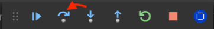
You will see that you are at the next line of code, and the variables panel has been updated with the results of executing the previous line of code. Notice that the paper variable has now been updated with the arguments input to the transaction:

Ctl + click on the paper variable in the Variables panel and select Add to watch:

You can now easily track this variable in the Watch panel as you progress with your debugging session:

Continue to Step Over or Step into the rest of the issue transaction until you are satisfied with this flow. If you just want to get through to the end of the transaction hit the Continue button which will complete the transaction.
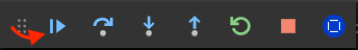
You will see the output from this transaction below in the OUTPUT box.

Section 7: Make smart contract updates to include cross-chaincode call, test in debugging session¶
1. OK, now that you have played with the debugger, let's add additional code to papercontract.js. We will first amend the issue function to take in interest rate as another parameter. The new issue function will also include code to query the commercial-bond contract for the interest rate of a bond that has a similar maturity date as the paper and align the paper rate to the bond rate. Then we will add the following the helper function: getPaperRate.
2. Before we edit papercontract.js, we need to update the createInstance function to include the paperRate parameter. Keep in mind papercontract.js uses paper.js to represent a paper.
Go to your VSCode Explorer and open up paper.js:

Replace the entire paper.js with the following code block:
/*
SPDX-License-Identifier: Apache-2.0
*/
'use strict';
// Utility class for ledger state
const State = require('./../ledger-api/state.js');
// Enumerate commercial paper state values
const cpState = {
ISSUED: 1,
TRADING: 2,
REDEEMED: 3
};
/**
* CommercialPaper class extends State class
* Class will be used by application and smart contract to define a paper
*/
class CommercialPaper extends State {
constructor(obj) {
super(CommercialPaper.getClass(), [obj.issuer, obj.paperNumber]);
Object.assign(this, obj);
}
/**
* Basic getters and setters
*/
getIssuer() {
return this.issuer;
}
setIssuer(newIssuer) {
this.issuer = newIssuer;
}
getOwner() {
return this.owner;
}
setOwner(newOwner) {
this.owner = newOwner;
}
/**
* Useful methods to encapsulate commercial paper states
*/
setIssued() {
this.currentState = cpState.ISSUED;
}
setTrading() {
this.currentState = cpState.TRADING;
}
setRedeemed() {
this.currentState = cpState.REDEEMED;
}
isIssued() {
return this.currentState === cpState.ISSUED;
}
isTrading() {
return this.currentState === cpState.TRADING;
}
isRedeemed() {
return this.currentState === cpState.REDEEMED;
}
static fromBuffer(buffer) {
return CommercialPaper.deserialize(Buffer.from(JSON.parse(buffer)));
}
toBuffer() {
return Buffer.from(JSON.stringify(this));
}
/**
* Deserialize a state data to commercial paper
* @param {Buffer} data to form back into the object
*/
static deserialize(data) {
return State.deserializeClass(data, CommercialPaper);
}
/**
* Factory method to create a commercial paper object
*/
static createInstance(issuer, paperNumber, issueDateTime, maturityDateTime, faceValue, paperRate) {
return new CommercialPaper({ issuer, paperNumber, issueDateTime, maturityDateTime, faceValue, paperRate });
}
static getClass() {
return 'org.papernet.commercialpaper';
}
}
module.exports = CommercialPaper;
Save this file before moving on to the next step. Save the file with Command + S if you are on Mac, or Ctl + S if you are on Linux or Windows.
3. Return to the VSCode Debug view, and return to papercontract.js:

4. Replace the following issue function in existing papercontract.js:
/**
* Issue commercial paper
*
* @param {Context} ctx the transaction context
* @param {String} issuer commercial paper issuer
* @param {Integer} paperNumber paper number for this issuer
* @param {String} issueDateTime paper issue date
* @param {String} maturityDateTime paper maturity date
* @param {Integer} faceValue face value of paper
*/
async issue(ctx, issuer, paperNumber, issueDateTime, maturityDateTime, faceValue) {
// create an instance of the paper
let paper = CommercialPaper.createInstance(issuer, paperNumber, issueDateTime, maturityDateTime, faceValue);
// Smart contract, rather than paper, moves paper into ISSUED state
paper.setIssued();
// Newly issued paper is owned by the issuer
paper.setOwner(issuer);
// Add the paper to the list of all similar commercial papers in the ledger world state
await ctx.paperList.addPaper(paper);
// Must return a serialized paper to caller of smart contract
return paper.toBuffer();
}
With this:
/**
* Issue commercial paper
*
* @param {Context} ctx the transaction context
* @param {String} issuer commercial paper issuer
* @param {Integer} paperNumber paper number for this issuer
* @param {String} issueDateTime paper issue date
* @param {String} maturityDateTime paper maturity date
* @param {Integer} faceValue face value of paper
* @param {Float} paperRate rate to price the paper
*/
async issue(ctx, issuer, paperNumber, issueDateTime, maturityDateTime, faceValue, paperRate) {
// query commercial-bond contract for return rate on bond with similar maturity date
let assignPaperRate = await ctx.stub.invokeChaincode("commercial-bond", ["getClosestBondRate", issuer, maturityDateTime], ctx.stub.getChannelID());
let newPaperRate = JSON.parse(assignPaperRate.payload.toString('utf8'));
console.log("bond rate received back is: " + newPaperRate);
// create an instance of the paper, if there is a bond with similar maturity rate, set paper rate to be same as bond rate, otherwise use paper rate from input.
var paper;
if (newPaperRate != "") {
console.log("set paper with bond rate " + newPaperRate);
paper = CommercialPaper.createInstance(issuer, paperNumber, issueDateTime, maturityDateTime, faceValue, newPaperRate);
} else {
console.log("set paper with original rate " + paperRate);
paper = CommercialPaper.createInstance(issuer, paperNumber, issueDateTime, maturityDateTime, faceValue, paperRate);
}
// Smart contract, rather than paper, moves paper into ISSUED state
paper.setIssued();
// Newly issued paper is owned by the issuer
paper.setOwner(issuer);
// Add the paper to the list of all similar commercial papers in the ledger world state
await ctx.paperList.addPaper(paper);
// Must return a serialized paper to caller of smart contract
return paper.toBuffer();
}
Save this file with Command + S if you are on Mac, or Ctl + S if you are on Linux or Windows.
Note: During the copy and paste process, the formatting of the code block might look off. You can highlight the code block, then Ctl + click and select Format Selection which should format the highlighted section nicely.
The above issue function first queries the commercial-bond contract for the return rate on a bond with a similar maturity date. It uses the invokeChaincode() API from the ChaincodeStub class of the fabirc-shim library. The invokeChaincode() API takes three arguments: <async> invokeChaincode(chaincodeName, args, channel) (see full spec here).
In the invokeChaincode() example in the issue function above:
- The first argument passed is
commercial-bondwhich is the name of the chaincode that you want to invoke. - The second argument in our example is
["getClosestBondRate", issuer, maturityDateTime]which is an array of strings. The first array element"getClosestBondRate"is the function within thecommercial-bondcontract you want to invoke, the second and third elements are the arguments to pass to thegetClosestBondRatefunction- in this case they are the name of the organization that issued the bonds you want to query and the maturity date that you want to compare bonds to. - The third argument is
ctx.stub.getChannelID()which returns the current channel that the calling chaincode is transacting on. In our example, this is becausepapercontractandcommercial-bondreside in the same channel. If the chaincode you want to invoke resides in a different channel, you will specify the name of that channel directly here. Remember, you can only invoke query transactions for chaincodes that are on a different channel.
The if-else code block in the above issue function will then test to see if the result of the invokeChaincode() function is an empty string. If the result is not an empty string, you want to create the paper asset with the bond rate (called newPaperRate). If the result is an empty string, you want to create the paper asset with the paperRate passed through the issue function.
Your issue function should look like the following:

5. Notice the breakpoint is still there in papercontract.js from Section 6. Let's remove it by clicking on the red dot or placing your cursor on that line and hitting F9. After this step you should not see any breakpoints.
Note: If for whatever reason, you have exited the debug session, you can always bring it back by clicking on the green arrow button in the DEBUG toolbar or by clicking on the blue bar at the bottom of VSCode that says Launch Smart Contract:
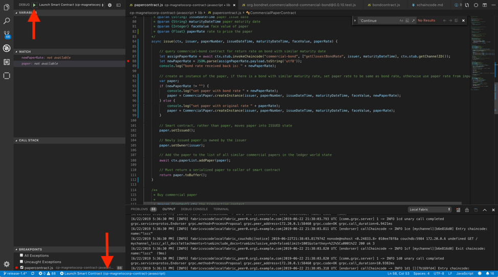
6. Because we made updates to the smart contract we will need to upgrade the smart contract in order for the modifications to take effect against the local Fabric network. With the integrated IBM Blockchain Platform Debugger you can do everything from one screen and without exiting the current debug session. Click the blue IBM Blockchain Platform button in the debug toolbar to reveal the debug command list.
7. Select Upgrade Smart Contract from the list of options:

8. You will be asked what function you want to invoke, type in instantiate:
9. Then you will see another pop-up asking what arguments to pass to the function. You will just hit Enter here:
10. Lastly, you will be asked if you want to provide a private data collection configuration file. Again, just hit Enter here:
11. Finally, upon successful instantiation, you will see a message in the lower right corner saying Successfully upgraded smart contract.
12. Re-start your debug session to pick up the update. Hit Stop in the debug toolbar:

13. Now, click on either the green arrow button in the DEBUG toolbar or click on the blue bar at the bottom of VSCode that says Launch Smart Contract (cp-magnetocorp-contract-javascript):
And you will see the debug tool bar with the blue IBM Blockchain Platform logo launched at the top. The bar at the bottom turns orange to indicate that you are currently in a debug session.
14. Return to papercontract.js, and place a new breakpoint on the following line, which is the first uncommented line in the issue function:
let assignPaperRate = await ctx.stub.invokeChaincode("commercial-bond", ["getClosestBondRate", issuer, maturityDateTime], ctx.stub.getChannelID());

15. Let's click on the IBM Blockchain Platform button in the debug toolbar:
16. Select Submit Transaction in the pop-up window:
17. Select the issue transaction in the pop-up window:
18. For the arguments pop-up, pass the following arguments inside the brackets:
"MagnetoCorp", "00004", "2020-01-31", "2020-04-30", "1000000","0.03"

19. In the transient data pop-up, hit Enter to skip this step and move forward:
20. And the debugger should stop at the breakpoint.

21. Add the variable newPaperRate to the Watch list. In the Variables panel, scroll down until you see the newPaperRate variable. Ctl + Click on newPaperRate and select Add to Watch, then press Enter for the variable to get added to the Watch panel:

22. Now find the variable paper in the Variables panel, and add that to the Watch panel as well:

23. Use the debug toolbar to Step over (or press F10) each line of code until you reach paper.setIssued(). Notice how the newPaperRate variable got set to the bond rate of bondNumber 00001 which is 0.05 (see Section 2 step 6). And the paper variable in the Watch panel has an interestRate of 0.05 (vs the 0.03 that was passed through the issue transaction):

24. Then you can hit Continue in the debug toolbar to complete the transaction.
25. You should see the following in the OUTPUT below upon a successful submission.

26. Click on the DEBUG CONSOLE view at the bottom of VSCode and see the console.log messages from submitting the new issue transaction.
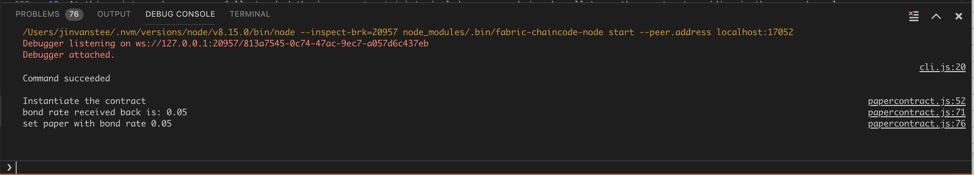
27. Take a closer look at the OUTPUT from step 20, and you will see a line that says [INFO] submitting transaction issue with args MagnetoCorp,00004,2020-01-31,2020-04-30,1000000,0.03. To double check that the paper we just submitted, MagnetoCorp:00004 indeed has been set with a rate of 0.05, instead of the 0.03 passed through the issue transaction, let's add a helper function called getPaperRate in section 8.
Section 8: Add a helper function to the paper contract, test in debugging session¶
1. Go back to papercontract.js. Add the following code block right after the instantiate function:
/**
* Get paper rate for specified paper
* @param {Context} ctx the transaction context
* @param {String} issuer commercial paper issuer
* @param {Integer} paperNumber paper number for this issuer
*/
async getPaperRate(ctx, issuer, paperNumber) {
try {
console.log("getPaper for: " + issuer + " " + paperNumber);
let paperKey = CommercialPaper.makeKey([issuer, paperNumber]);
let paper = await ctx.paperList.getPaper(paperKey);
console.log("paper rate for: " + issuer + " " + paperNumber + " is " + paper.paperRate);
return paper.paperRate;
} catch (e) {
throw new Error('Paper does not exist: ' + issuer + paperNumber);
}
}
Save this file with Command + S if you are on Mac, or Ctl + S if you are on Linux or Windows.
Your papercontract.js should look like the following:
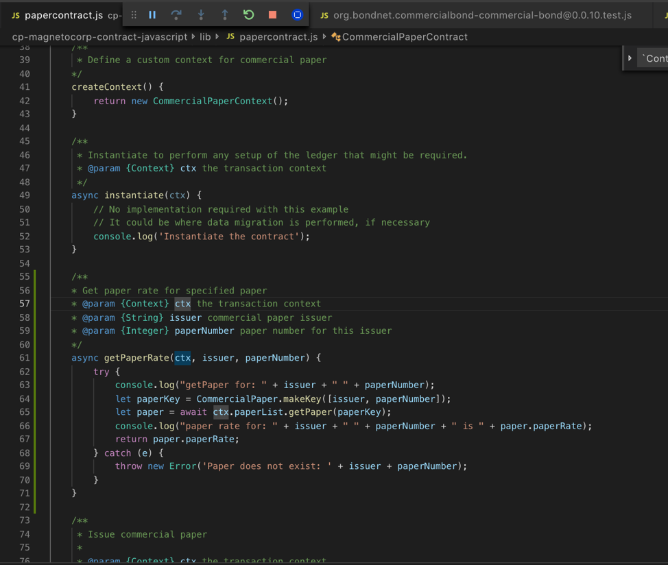
2. Now that you have updated the smart contract again, you will need to deploy this new one to the local running peer. Follow the steps in Section 7: steps 6 - 13.
3. Let's evaluate a getPaperRate transaction. Let's click on the IBM Blockchain Platform button in the debug toolbar:
4. Now select Evaluate Transaction from the list:

5. In the next pop-up window, you will see the new transaction getPaperRate that you just added. Select it:

6. In the next pop-up, enter the following as arguments inside the brackets:
"MagnetoCorp","00004"

7. For the next pop-up you will be asked for transient data for this transaction. Just hit Enter here:
8. Upon success you will see the following output, which confirms that the paper submitted in Section 7 did indeed take the bond rate of 0.05:

9. If you have time, evaluate another issue transaction. This time pass a maturity date that you know does not have a match in commercial-bond. You can always go back to Section 2 step 6 to see which bonds are in the commercial-bond world state, and pick a maturity date for your paper that is not in the same month as the bonds. Step through the debugger with variables added to the Watch panel, and see if the logic behaves the way you expect.
10. Go to the VSCode IBM Blockchain Platform view. Under the Local Fabric Ops panel, you should see three papercontract@vscode-debug-<datetime> packages under Installed and one papercontract@vscode-debug-<datetime> under Instantiated. The instantiated package should have the same datetime as the latest installed one. The first papercontract@vscode-debug package was done against the original paper contract, the second package was done against the paper contract with the modified issue transaction, and the third package was built upon the second with a new getPaperRate function.
11. At this point you have successfully tweaked the papercontract.js to include a cross-chaincode call to another contract residing in the same channel. You have also added a helper function to get a paper rate on an existing paper on the ledger. One last useful transaction to have is one that queries and returns all papers by the same issuer. Let's make this update in the next section.
Section 9: Add getAllPapers transaction to contract in debugging session¶
1. Return to your papercontract.js and paste in the following code block right after the getPaperRate() function:
/**
* Get all the commercial papers from issuer
* @param {Context} ctx the transaction context
* @param {String} paperIssuer the organization that issued the paper
*/
async getAllPapersFromIssuer(ctx, paperIssuer) {
//following is required to setup the key in the proper format that getStateByPartialCompositeKey expects
var paperKey = CommercialPaper.makeKey([paperIssuer]);
var org = CommercialPaper.splitKey(paperKey);
var iterator = await ctx.stub.getStateByPartialCompositeKey("org.papernet.commercialpaperlist", org);
const allResults = [];
while (true) {
const res = await iterator.next();
if (res.value && res.value.value.toString()) {
console.log(res.value.value.toString('utf8'));
const Key = res.value.key;
let Record;
try {
Record = JSON.parse(res.value.value.toString('utf8'));
} catch (err) {
console.log(err);
Record = res.value.value.toString('utf8');
}
allResults.push({ Key, Record });
}
if (res.done) {
console.log('end of data');
await iterator.close();
console.info(allResults);
return JSON.stringify(allResults);
}
}
}
This getAllPapersFromIssuer() function takes one argument, the name of the paper issuer you want to query. In our example so far, we have only used MagnetoCorp, so that is the string that would be passed as an argument to this transaction at this point. You should have noticed by now that this lab uses function and transaction interchangeably. They really mean the same thing in this lab, where one Node.js function invokes one smart contract transaction.
You may also have noticed that in every papercontract.js function, the first argument is ctx. However, when we actually submit or evaluate that transaction, we don't pass anything to represent the ctx argument. In the new Fabric programming model, ctx represents the current transaction context. It gets passed automatically when the transaction is invoked.
In the above function, the first thing we do is construct a partial composite key in the format that the API getStateByPartialCompositeKey() requires. A composite key is a key that is made up of two or more parts. In a smart contract you need to define assets with keys that distinguish them. You can have simple keys, meaning one unique key represents one asset. You can also have composite keys, meaning the asset is represented by the combination of multiple unique values. In the case of our commercial-paper and commercial-bond, their composite key is issuer:unique number. This means MagnetoCorp can have a paper with the number 00001, and Digibank can also have a paper with number 00001, and on the ledger they would be viewed as two separate assets.
So in essence what we are constructing is a partial composite key that represents part of the whole key. What this allows us to do is use the getStateByPartialCompositeKey() API to get all the assets that match that partial composite key. getStateByPartialCompositeKey() returns an iterator object that you can then use to iterate through all the assets that match the partial composite key. For the complete spec on getStateByPartialCompositeKey() see here.
In the while loop in the above function, we iterate through the assets and capture the attributes of each paper and add them to an array. And then the papers are returned in JSON format.
2. Now save the modified papercontract.js and use Section 7, steps 6 - 13, to upgrade the smart contract from your current debug session.
3. Within a few seconds, you should see the debug toolbar appear at the top. Click on the blue IBM Blockchain Platform button:
4. Let's evaluate a transaction with the newly added getAllPapersFromIssuer transaction. First, select Evaluate Transaction:
5. Select the new transanction getAllPapersFromIssuer from the list:

6. Type in "MagnetoCorp" inside the brackets for the arguments window:

7. Next, it will ask you what transient data to pass for the transaction. Press Enter to move forward.
8. Upon successful evaluation, you will see the following message in the lower right corner:

9. You will also see all the papers issued by MagnetoCorp in the OUTPUT panel (In the following screenshot you will see three papers. But in your output you should only have two: MagnetoCorp:00004 and MagnetoCorp:00005):

10. Go to the VSCode IBM Blockchain Platform view, under the Local Fabric Ops panel, you should see four papercontract@vscode-debug-<datetime> packages under Installed and one papercontract@vscode-debug-<datetime> under Instantiated. The instantiated package should have the same datetime as the latest installed one. The latest instantiated package is from this section when we added the getAllPapersFromIssuer transaction. We hope that with this flow, you get to experience one way you can develop and build upon your smart contract.
Section 10: Package commercial-paper, install and instantiate¶
Now that you are done updating the commercial-paper smart contract, you can exit out of the debug session, toggle off development mode on your peer, and package, install and upgrade to the completed smart contract.
1. Exit debug session by pressing Stop (or Ctl + F5) in the debug toolbar:
2. Now to go the IBM Blockchain Platform Extension view in VSCode, and toggle development mode off on peer0.org1.example.com:

3. Upon success, you will no longer see the infinity symbol next to peer0.org1.example.com and you will see the following message appear in the lower right corner:
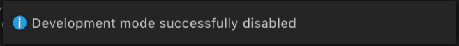
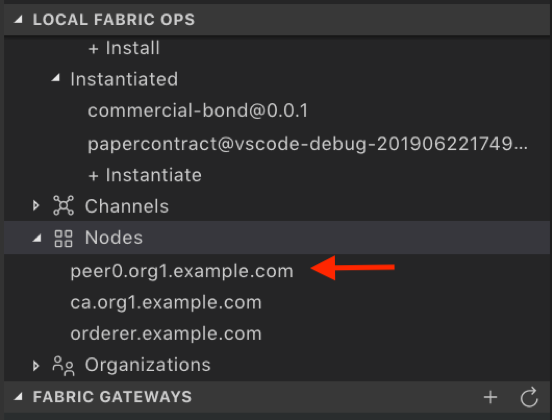
4. Now we will manually package up commercial-paper. Go back to the VSCode Explorer perspective. In the workspace panel, select package.json in the cp-magnetocorp-contract-javascript folder to open it in the editor:
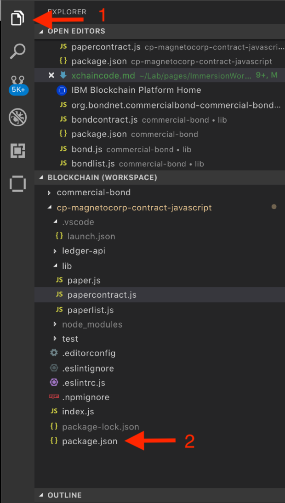
5. Change the package version to 0.0.2 as follows:

Save the file with Command + S if you are on Mac, or Ctl + S if you are on Linux or Windows.
6. Open up the Command Palette (either by clicking on the gear icon to the lower left and selecting Command Palette or pressing Command + Shift + P if you are on a Mac and Ctl + Shift + P if you are on Linux).
Select IBM Blockchain Platform: Package a Smart Contract Project:
7. Then select cp-magnetocorp-contract-javascript and press Enter.
8. Upon success, you will see the following message in the lower right corner:
9. Now you will install this chaincode to your local-fabric. Navigate to the IBM Blockchain Platform view in VSCode (the 6th button down from the left menu):
10. Under the Local Fabric Ops panel, click on + Install, then select papercontract@0.0.2 from the list:

Upon success, you will see a message similar to the following in the lower right corner of VSCode:
You will also see the package listed under Installed in the Local Fabric Ops panel:

11. Now you can upgrade the debug package to the papercontract@0.0.2 package. Select the existing debug papercontract package and Ctl + Click or right click and select Upgrade Smart Contract:

12. Select papercontract@0.0.2 from the list:

13. In the function box, enter instantiate as follows:
Then you will see another pop-up asking what arguments to pass to the function. You will just hit Enter here:
Lastly, you will be asked if you want to provide a private data collection configuration file. Again, just hit Enter here:
14. Upon successful upgrade you will see the following message in the lower right corner:

You will aso see in the Local Fabric Ops panel, that papercontract@0.0.2 is listed under the Instantiated section:

15. Let's run a couple of quick tests to make sure the package looks good. In the Fabric Gateways panel, expand on the mychannel twistie to reveal the two chaincodes. Drill into the papercontract chaincode to reveal all the transactions.

16. Let's first submit an issue transaction. This time let's issue a paper as Digibank. Right click on issue and select Submit Transaction.

17. Then enter the following arguments inside the brackets to pass to issue:
"Digibank","00001","2020-01-31","2020-05-31","90000","0.02"

For transient data, just press Enter:
18. Upon success, you will see the following in the OUTPUT panel:

19. Now we want to check that this paper actually has been issued with the rate of 0.04, which is the bond rate from bond Digibank:00001 (see Section 2 step 6). Again, if you recall, this is because paper Digibank:00001 has a maturity date in the same month as bond Digibank:00001. Let's do this by submitting a getPaperRate transaction. From the Fabric Gateways panel, right click on getPaperRate and select Submit Transaction:

20. Then enter the following arguments inside the brackets to pass to getPaperRate:
"Digibank","00001"
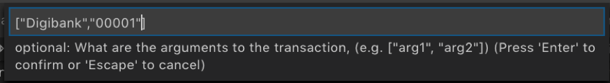
For transient data, just press Enter:
21. Upon success, you will see the following in the OUTPUT panel. And you will see that indeed, paper Digibank:00001 has been set with a paper rate of 0.04:

22. The last transaction we want to test is the getAllPapersFromIssuer. I will leave it to you to complete this test given the knowledge you now possess.
23. Leave the environment running for now. Congratulations! You are done with this part of the lab!